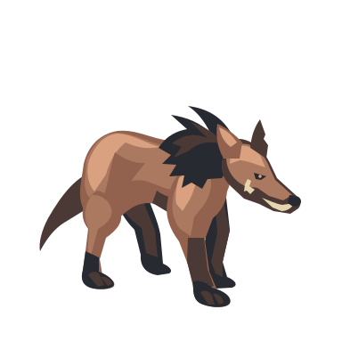
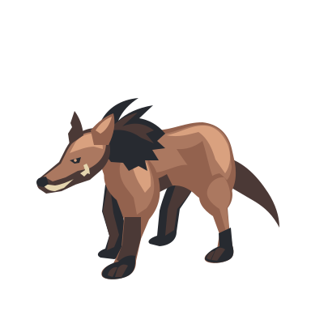
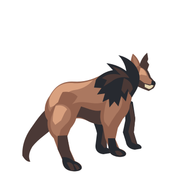
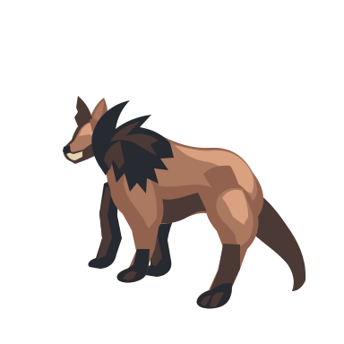
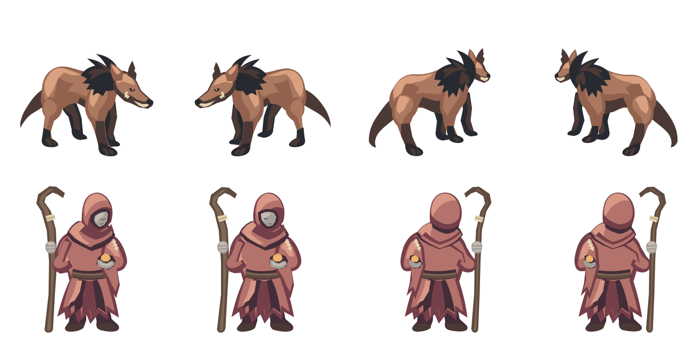
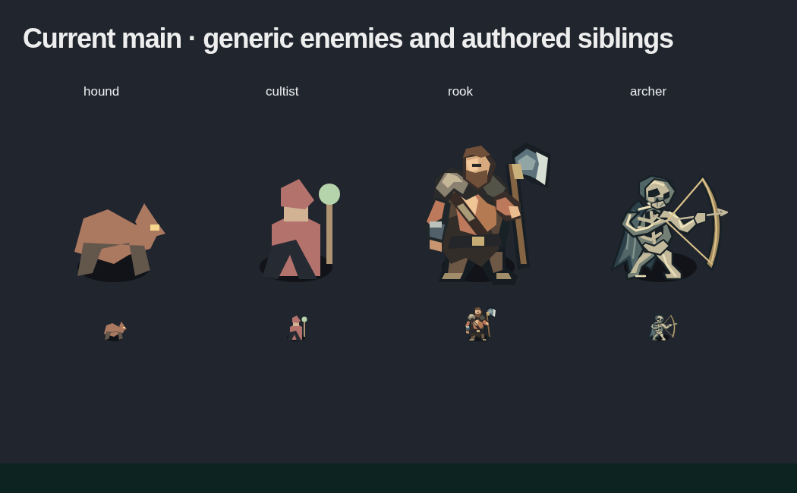

1× target32px canvas
1× target32px canvas 1× target32px canvas
1× target32px canvas 1× target32px canvas
1× target32px canvas 1× target32px canvas
1× target32px canvasSelf-review: four promising hound candidates; four acolyte views held. The acolyte front pair and rear pair repeat too closely for a true four-heading set. These are retained source studies, not accepted game sprites.
Two enemies, four diagonal headings each. New transparent native SVG candidates: alert russet anatomy and weighted wine cloth, seen from a fixed elevated camera.
30×24px target. Above: 4× inspection. Below: 1× target scale and the tighter 32px canvas. The green square grid uses 32px tiles; no contact shadow is baked into the drawings.




30×33px target; actual returned width is about 20px. Held: diagonal separation is insufficient. Above: 4× inspection. Below: 1× target scale and the tighter 32px canvas. The green square grid uses 32px tiles; no contact shadow is baked into the drawings.
1× target32px canvas1× target32px canvas1× target32px canvas1× target32px canvasGenerated original is preserved byte-for-byte. Each figure is an extraction of its named cell, with only the outer sheet translation removed.

Current main, actual renderer: 4× and native scale. Hound and acolyte compared with authored Rook and Hollow archer.

Design record and findings · Exact shared request · Returned usage · Reservation and bound · Canonical source lineage · Validation
GPT Image 2.6 Sunburst; GPT-6.1 Terra SVG author, high effort. One shared request; no duplicate per-cell settings. Candidate-only source study. Enemy state currently has no facing field; game integration and acceptance require separate work.